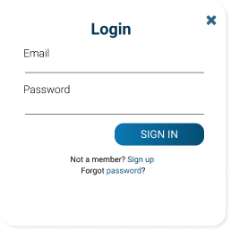
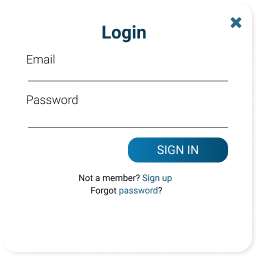

WorldBuilder
Introduction
WorldBuilder is a procedural map generator for tabletop RPGs such as Dungeons and Dragons and Pathfinder. It allows game masters (GMs) to generate maps instead of manually creating them for their campaigns.
Research
Initially being a project for a software engineering class, there wasn't much time to conduct user research. Looking through designs that would appeal to our intended demographics of tabletop RPG players, the top results I found were that they looked for these certain qualities in design:
- Speed, ease and efficiency
- Clear, intuitive visuals
- Minimalism
User Stories
To follow Scrum and Agile methodologies, we created user stories and set tasks to accomplish these user stories in every sprint. We wanted WorldBuilder to have the following features:
- Use procedural generation to generate world maps suitable for tabletop RPG settings
- Have an intuitive and informative GUI for letting the user view and interact with the map
- Display variable levels of map detail at different scales
- Allow for user customization of the world generation process
- Procedurally generate dungeon submaps
- Be able to display maps using different classification layers.
Below is the set of user stories we created for each sprint:
Sprint 1
- As a GM I would like to be able to generate a world map.
- As a user I’d like to be able to interact with the application without learning unix.
Sprint 2
- As a GM I would like to be able to generate a fine scale map.
- As a GM I would like to be able to zoom in to greater levels of detail.
- As a GM I would like to be able to save the map in other formats.
Sprint 3
- As a GM I would like to add my own content to the content database.
- As a GM I would like to be able to regenerate particular regions.
- As a GM I would like to be able to produce a version of my map with certain details hidden so that I can provide a map to my players that fits with their incomplete knowledge of the world.
- As a GM I would like to be able to generate dungeons.
- As a GM I would like to be able to set waypoints of particular areas and be able to return to them with ease.
- As a GM I would like waypoints for my players.
Sprint 4
- As a GM I would like to be able to see political, topographical, biome-based, and economic map types.
Wireframes

High Fidelity Prototype

 



Figma Link
Github Repository